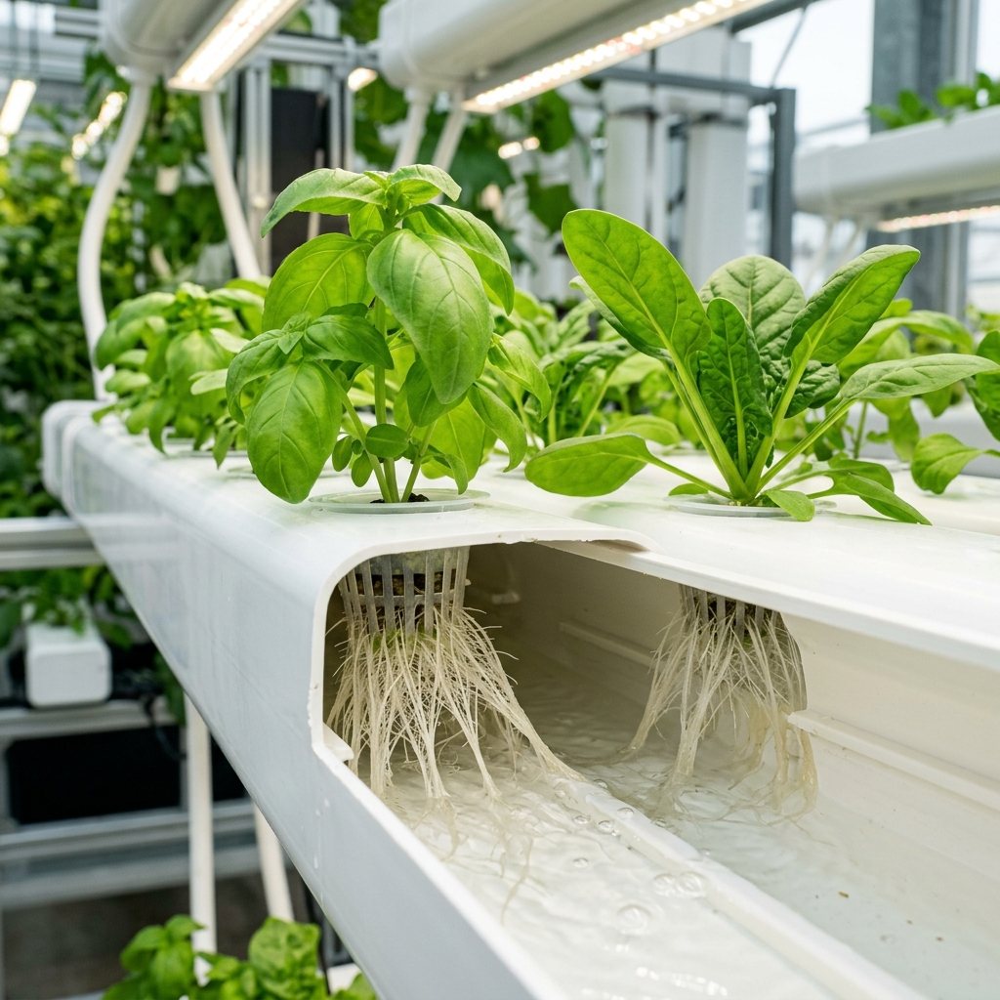

The science of growing plants in water rather than soil. Discover different types of setups and explore the core mechanisms of our NFT system.

Traditional soil farming acts primarily as an anchor for roots and a random buffer for nutrients. Hydroponics extracts soil entirely from the equation. Instead, plants are supported in net cups by sterile substrates (such as expanded clay pebbles, rockwool, or coconut fiber).
The roots are fed a perfectly balanced liquid nutrient solution containing all 17 elements critical for growth. Because they don't have to search through soil for nutrients, the root systems stay compact, and energy is redirected into rapid leaf, fruit, and flower development.
A continuous, very shallow stream of nutrient solution ("film") flows down slightly slanted growth channels. Roots sit directly in this film, absorbing water and air simultaneously.
Plants are suspended in nets on a floating raft. The roots are completely submerged in a deep reservoir of oxygenated nutrient water bubble-fed by an air pump.
The roots hang freely in a closed chamber where they are misted at regular intervals with nutrient solution. This provides maximum oxygen exposure to roots, accelerating growth.
Hover over or tap the colored parts of the diagram below to explore how a closed-loop NFT hydroponic system works.
Click or hover on any colored element in the system diagram (such as the plants, channels, water pump, reservoir, or pipes) to display detailed anatomical and functional information.